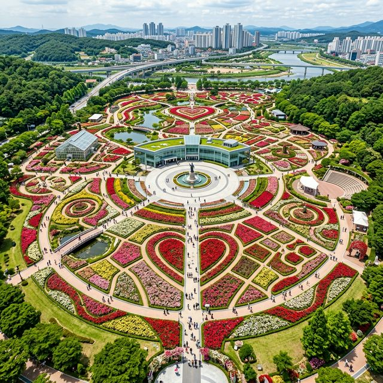
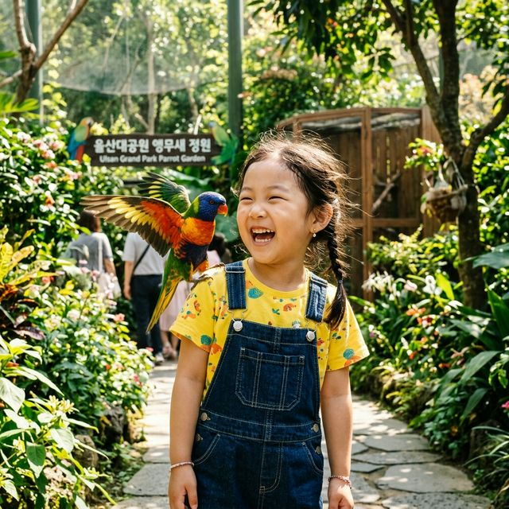
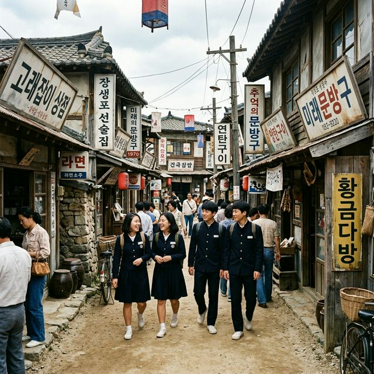

울산의 자부심이라 불리는 올해 장미축제의 공식 기간은 2026년 5월 20일(수)부터 5월 25일(월)까지로 확정되었습니다. 울산광역시와 SK에너지가 공동으로 주최하는 이
축제는 기업의 사회공헌과 지자체의 열정이 만나 탄생한 국내 최고의 정원 축제입니다. 올해의 컨셉은 'Love Story in Ulsan'으로, 장미가 가진 사랑의 언어를
현대적인 예술과 접목하여 남녀노소 누구나 즐길 수 있는 복합 문화 공간으로 기획되었습니다.
울산 대공원 남문에 위치한 장미원 일대에서 펼쳐지는 이번 축제는 단순히 꽃을 보는 것을 넘어, 오감을 자극하는 다양한 체험 프로그램들이 가득합니다. 기온이 점차 상승하는 5월 중순의 날씨를 고려하여,
한낮의 관람객들이 시원하게 쉴 수 있는 대형 그늘막과 쿨링 포그 시설을 대폭 확충하여 쾌적한 관람 환경을 조성했습니다. 장미의 선명한 색감을 가장 잘 관찰할 수 있는 오전 시간대 방문을 특히 권장하며,
각 구역마다 배치된 전문 숲 해설사들의 설명을 통해 장미에 얽힌 흥미로운 역사와 품종 이야기를 도슨트 투어처럼 즐기실 수 있습니다.
| 행사 명칭 | 제17회 울산 대공원 장미축제 |
|---|---|
| 기간 | 2026. 05. 20(수) ~ 05. 25(월) |
| 장소 | 울산 대공원 장미원 및 앵무새 정원 일원 |
| 운영 시간 | 09:00 ~ 22:00 (입장 마감 21:00) |
울산 대공원 장미원의 규모는 국내에서 손꼽히는 정원 중 하나로, 약 56,000㎡의 광활한 부지에 265종 300만 송이의 장미가 각기 다른 자태를 뽐내고 있습니다. 전
세계 희귀 품종들을 한곳에서 볼 수 있도록 테마별로 구성된 이곳은, 세계 장미 협회가 선정한 '탁월한 정원상' 수상지답게 완벽에 가까운 관리 상태를 보여줍니다. 단순히 개수가 많은 것이 아니라,
프랑스, 독일, 영국 등 장미 종주국들의 정원 양식을 그대로 재현해 놓아 마치 유럽 여행을 온 듯한 착계에 빠지게 만듭니다.
특히 중앙 광장에 설치된 거대한 장미 조형물과 길게 늘어선 장미 터널은 이번 260423 축제 최고의 로맨틱한 구간입니다. 터널 위로 쏟아지는 분홍색과 노란색 장미의 조화는 시각적인 만족감을 넘어,
은은하게 퍼지는 향기로 방문객들의 스트레스를 한순간에 씻어줍니다. 각 품종마다 이름과 유래가 적힌 푯말이 잘 구비되어 있어, 마음에 드는 장미의 학명을 기억해두었다가 나중에 나만의 정원을 가꾸는 힌트로
삼기에도 좋습니다. 넓은 부지를 한 바퀴 도는 데만 최소 1~2시간이 소요되므로, 천천히 장미의 세밀한 결까지 관찰하며 정원을 음미하는 여유를 가져보시기 바랍니다.

국내 최대 규모를 자랑하는 울산 대공원 장미원 / AI 제작 이미지
축제의 시작을 알리는 개막식은 매년 울산 시민뿐만 아니라 전국 관광객들의 이목이 쏠리는 거대한 이벤트입니다. 유명 가수의 축하 공연은 물론이고, 국내 최고의 조명 아티스트들이 참여한 불꽃
드론쇼가 울산의 밤하늘을 장미꽃 모양으로 수놓게 됩니다. 2026년에는 최첨단 홀로그램 기술을 활용하여 하늘에 거대한 '디지털 장미'를 띄우는 이색적인 연출이 예고되어 있어
벌써부터 기대감을 모으고 있습니다. 공연 중간중간 터지는 불꽃은 장미의 붉은 빛과 어우러져 관람석에 앉은 모든 이들에게 전율을 선물할 것입니다.
축제 기간 내내 이어지는 야간 상설 공연도 수준급입니다. 정통 클래식 오케스트라의 연주부터 감미로운 재즈, 그리고 열정적인 팝페라까지 다양한 장르의 뮤지션들이 장미 숲속에서 무대를 펼칩니다. 꽃 향기에
취하고 선율에 녹아드는 이 시간은 연인들에게는 더할 나위 없는 데이트 코스가 되며, 가족들에게는 행복한 추억의 페이지가 됩니다. 특히 메인 무대 주변에 마련된 피크닉 존에서는 편안하게 앉아 혹은 누워서
밤하늘의 별과 조명이 켜진 장미를 함께 감상할 수 있어, 여유로운 축제 즐기기의 정석을 보여줍니다.
울산 대공원 장미원의 또 다른 장점은 장미뿐만 아니라 다양한 볼거리가 밀집해 있다는 것입니다. 장미원 바로 옆에 위치한 앵무새 정원은 특히 아이들에게 인기가 높습니다.
화려한 깃털을 가진 수백 마리의 앵무새들이 자유롭게 날아다니며 방문객들의 어깨나 머리 위에 내려앉는 신기한 경험을 할 수 있습니다. 2026년을 맞아 새롭게 도입된 AI 기반 조류 인식 가이드를
이용하면, 내 눈앞에 있는 앵무새의 종류와 특징을 스마트폰으로 즉시 확인할 수 있어 교육적인 효과까지 톡톡히 챙길 수 있습니다.
또한, 근처의 어린이 지능형 놀이터는 단순한 미끄럼틀과 그네를 넘어 아이들의 창의력을 자극하는 다양한 체험 기구들로 가득합니다. 장미 구경에 조금은 지루해할 수 있는 아이들을 위해 마련된 이 공간은,
부모님들에게는 잠시나마 휴식 시간을 제공하고 아이들에게는 에너지를 마음껏 발산할 기회를 줍니다. 앵무새와의 교감, 꽃과의 산책, 그리고 즐거운 놀이가 한 장소에서 모두 가능하기에 울산 대공원은 5월
가족 나들이 장소로서 최고의 경쟁력을 가집니다. 유모차 이동에도 불편함이 없도록 모든 길에 턱을 없앤 세심한 배려 또한 칭찬할 만한 요소입니다.

아이들의 호기심을 자극하는 앵무새 정원 / AI 제작 이미지
인생샷을 건지고 싶다면 장미원 중앙에 위치한 분수 광장을 첫 번째 목표로 삼으세요. 공중으로 시원하게 솟구치는 물줄기와 그 뒤로 끝도 없이 펼쳐진 형형색색의 장미 밭은
어떤 카메라도 명작을 만들어내는 배경이 됩니다. 특히 오후 4시경 해가 뉘엿뉘엿 지기 시작할 때의 역광을 이용하면 장미 꽃잎 테두리가 금색으로 빛나는 환상적인 사진을 얻을 수 있습니다. 사진 동호회
사람들이 삼삼오오 모여 장시간 머무는 이유도 바로 여기에 있습니다.
두 번째 명소는 '장미의 종' 조형물 아래입니다. 커다란 장미 덩굴이 감싸 안고 있는 듯한 이곳은 연인들이 입을 맞추거나 손을 잡고 찍는 필수 코스로 알려져 있습니다.
260423 일자에는 이곳에 전문 사진작가가 대기하여 무료로 인화 서비스를 제공하는 이벤트도 예정되어 있으니 적극적으로 활용해 보시기 바랍니다. 마지막으로 정원 가장 자리에 위치한 고층 전망대에
올라가면 장미원 전체를 한눈에 내려다보는 장엄한 풍경을 담을 수 있는데, 이는 울산 대공원만의 광활한 스케일을 한 장의 사진으로 증명하는 가장 좋은 방법입니다.
축제 기간 중 울산 대공원 남문 주차장은 오전 10시가 넘으면 이미 만차 상태인 경우가 많습니다. 주차 대기 시간만 1시간 이상 소요될 수 있으므로 가급적 대중교통 이용을
강력히 추천합니다. 울산역(KTX)이나 시외버스터미널에서 시내버스를 이용하면 대공원 인근까지 편리하게 이동할 수 있으며, 축제 기간에는 주요 거점을 연결하는 무료 셔틀버스가 수시로 운행됩니다. 주말에
자차를 이용해야만 한다면 대공원 정문이나 동문 주차장에 차를 세우고 아름다운 산책로를 따라 약 20분간 걸어서 남문의 장미원까지 이동하는 것이 오히려 더 빠를 수 있습니다.
울산 대공원은 워낙 넓기 때문에 입구마다의 거리감이 상당합니다. 장미원을 주 목적으로 한다면 남문을 공략하시고, 숲길 산책을 즐기며 여유롭게 접근하고 싶다면 정문이나
동문을 선택하세요. 장애인 전용 주차 구역은 장미원 입구와 가장 가까운 곳에 배치되어 있으며, 교통 약자를 위한 전기 카트 이동 서비스도 작년보다 확대 운영될 예정입니다. 주차 안내 요원들의 지시를 잘
따르고 무리하게 갓길 주차를 시도하지 않는 성숙한 시민 의식을 보여준다면, 모두가 즐거운 축제 관람을 시작할 수 있을 것입니다.
울산까지 왔다면 장미만 보고 돌아가기엔 너무 아쉽죠. 대공원에서 차로 15분 거리에 있는 장생포 고래문화마을은 과거 고래잡이의 역사를 생생하게 복원해 놓은 테마파크입니다.
옛날 교복을 빌려 입고 1970년대 울산의 골목길을 걷는 경험은 부모님 세대에게는 향수를, 젊은 층에게는 색다른 재미를 줍니다. 실물 크기의 고래 모형들과 고래 박물관은 아이들에게는 최고의 체험
학습장이 되어줄 것입니다.
또한, 대한민국 제2호 국가정원인 태화강 국가정원도 빼놓을 수 없는 코스입니다. 끝없이 펼쳐진 십리대숲의 울창한 대나무 길을 걸으며 일상의 소음을 잠재우고 진정한 '쉼'의
가치를 발견해 보세요. 저녁 시간대에 맞춰 방문한다면 태화강 물길 위로 흐르는 야경 조명과 은하수 길의 몽환적인 분위기를 만끽할 수 있습니다. 장미의 화려함과 대나무의 정갈함, 그리고 고래 도시의
매력까지 더해진다면 울산 여행은 1박 2일도 부족한 알찬 일정이 될 것입니다.

과거의 향수를 간직한 장생포 고래문화마을 / AI 제작 이미지
여행의 완성은 역시 맛있는 음식이죠. 울산을 대표하는 별미 언양 불고기는 얇게 썬 소고기를 석쇠에 구워낸 고소함이 특징입니다. 장미공원에서 차로 20~30분이면 언양
불고기 특구를 만날 수 있는데, 입안에서 사르르 녹는 부드러운 고기 맛은 남녀노소 누구나 좋아합니다. 고기 한 점을 쌈에 싸서 크게 한 입 먹고 난 뒤 마시는 시원한 냉면 한 그릇은 축제의 피로를
말끔히 씻어내 줍니다.
가벼운 식사를 원하신다면 울산 성남동의 젊음의 거리에 위치한 노포들을 찾아보세요. 수십 년 전통의 떡볶이와 만두, 그리고 울산의 명물인 '쫀드기' 튀김 등 정감 넘치는
길거리 음식이 가득합니다. 또한 태화강 국가정원 인근의 카페거리에서는 강줄기를 바라보며 수준 높은 커피와 디저트를 즐길 수 있습니다. 장미 향에 취했던 오후를 분위기 있는 카페에서의 차 한 잔으로
마무리하는 것이야말로 진정한 힐링의 끝판왕 아닐까요?
마지막으로 쾌적한 관람을 위한 몇 가지 팁을 드리자면, 5월의 울산 햇살은 매우 강력하므로 자랑스러운 자외선 차단제와 모자는 선택이 아닌
필수입니다. 하루 종일 걷는 일정이므로 세련된 구두보다는 발을 편안하게 감싸주는 기능성 운동화를 추천합니다. 정원 내 곳곳에 음수대가 있지만 개인용 텀블러를 준비한다면
더욱 위생적이고 편리하게 수분을 보충할 수 있습니다.
관람객이 몰리는 주말에는 아이들과 반려 동물을 잃어버리지 않도록 세심한 주의가 필요합니다. 반려동물은 반드시 목줄을 착용하고 보호자의 통제 하에 있어야 하며, 배변 봉투 지참은 필수 에티켓입니다.
장미꽃을 꺾거나 울타리 안으로 무리하게 들어가는 행위는 정원 훼손뿐만 아니라 가시에 찔리는 상처를 입을 수 있으니 지양해 주시기 바랍니다. 모든 이가 행복하게 꽃을 감상할 수 있도록 서로를 배려하는
마음을 가진다면, 2026년 울산 대공원 장미축제는 인생 최고의 봄날로 기억될 것입니다.